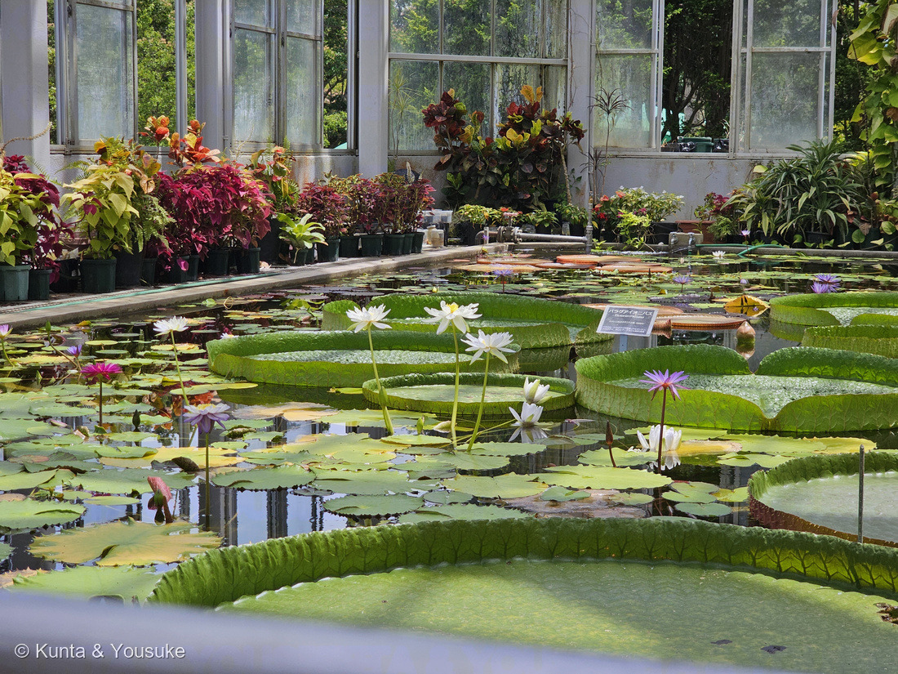
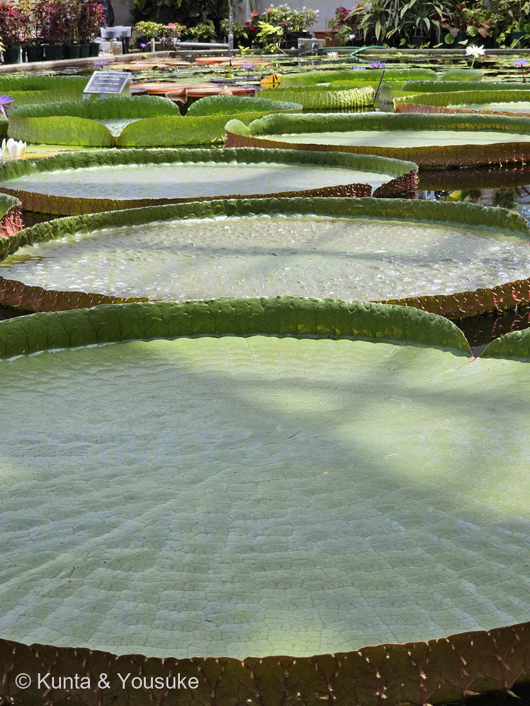
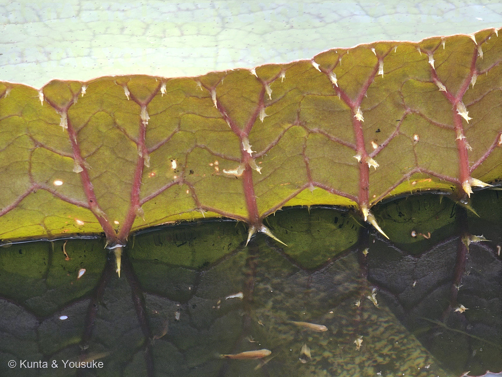
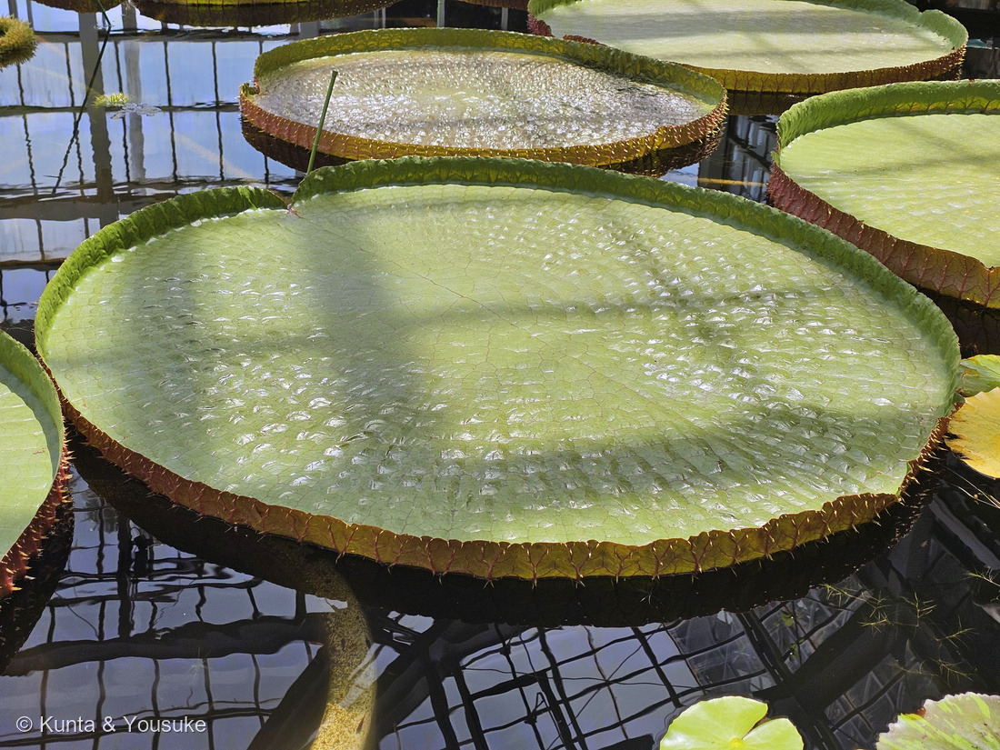
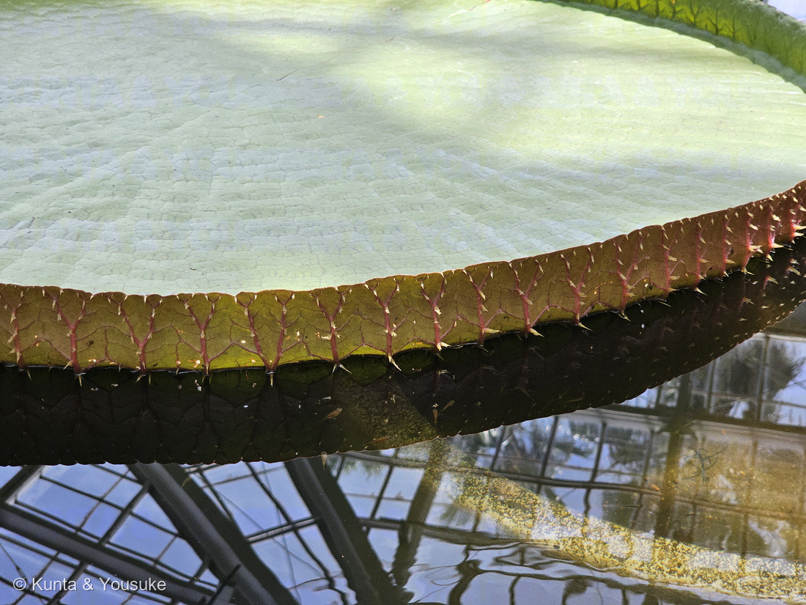
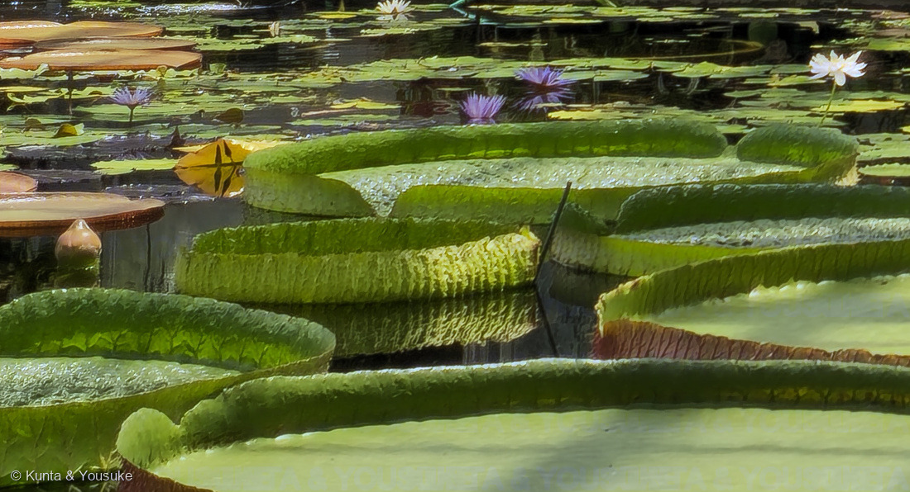
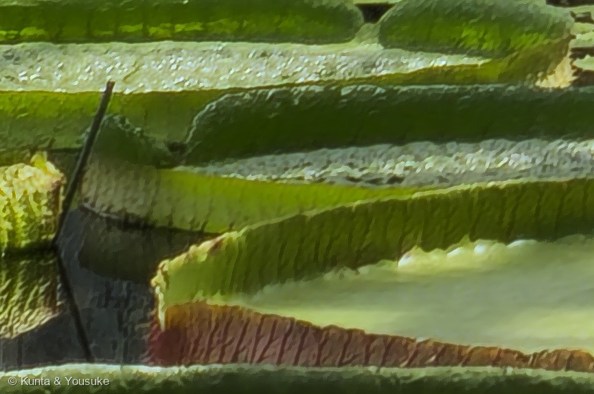
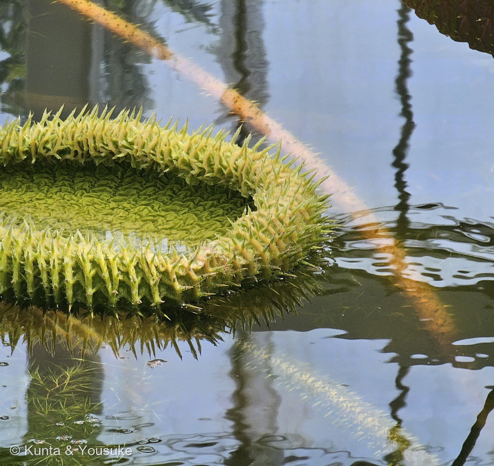

地図を読み込んでいるよ…
🔍 写真も地図も、押しているあいだ拡大して見られるよ（スマホは指を置いてすこし待ってね）。
🌍 の地図＝この子がもともと自生している場所を緑に。南アメリカの熱帯・亜熱帯の、流れのゆるやかな川と湿地。オオオニバス（V. amazonica）はブラジルなどアマゾン川流域、パラグアイオニバス（V. cruziana）はパラナ川・パラグアイ川流域（アルゼンチン、パラグアイ、ボリビア、ブラジル南部）、2022年に新種として記載された V. boliviana はボリビア北東部ベニ県のリャノス・デ・モホス。日本には自生せず、温室で育てられている。
⭐南アメリカだけにいる一族だよ。オオオニバス属（Victoria）は3種しかいなくて、そのもともとの住まいはみんな南アメリカの、流れのゆるやかな川と湿地。⭐⭐オオオニバス（V. amazonica）はアマゾン川流域（日本語版Wikipedia「南米アマゾン川流域に生育」）、パラグアイオニバス（V. cruziana）はパラナ川・パラグアイ川流域（園の名札「アルゼンチン、パラグアイ、ボリビア、ブラジル南部原産」）、⭐2022年に見つかった3人目 V. boliviana はボリビア北東部ベニ県のリャノス・デ・モホスというサバンナ。⚠フランス領ギアナもアマゾンの流域に入るけれど、塗るとフランスごと緑になってしまうので、ここに書いておくね。⚠⚠日本は塗っていない──この子は日本には自生せず、温室の池で育てられている子。⭐⭐⭐でも、同じスイレン科の「トゲの子」は日本にもいるよ──おまけのオニバス（鬼蓮）がそれ。⭐本州・四国・九州のため池や沼にすむけれど、いまは絶滅危惧II類。⭐⭐南アメリカの大皿と、日本のため池の鬼蓮が、同じスイレン科のなかまなんだ。
⚠ 地図は国（日本と中国だけ県・省）までしか塗れないから、ほんとうの分布より広く見えていることがあるよ。地図はだいたいの場所。正確なところは、上の文を見てね。
オオオニバス
Victoria spp.（オオオニバス属）
この池にいた3つの名札＝オオオニバス（Victoria amazonica）／パラグアイオニバス（Victoria cruziana）／ロングウッドオオオニバス（Victoria 'Longwood Hybrid'・園芸品種）
スイレン科 · Nymphaeaceae（オオオニバス属）── 図鑑ではじめてのスイレン科＝86科目。スイレン目 Nymphaeales
燻太さんの一言「さすがに葉の上には乗れないけど、子供だったらできるかもね。葉の裏のトゲ、かっこいいね」── その両方に、答えが見つかったよ
⭐⭐⭐ 名前と学名の由来 ── 女王の名前と、「大きな鬼蓮」
- ⭐⭐⭐属名 Victoria は、イギリスのヴィクトリア女王にちなむ（日本語版Wikipedia「オオオニバス属」）。命名者は R. H. Schomburgk、1837年。——⭐この年、ヴィクトリアは18歳で即位したばかりだった。
- ⭐⭐和名は「オオ」＋「オニバス」。——オニバス（鬼蓮・Euryale ferox）は、日本のため池や沼に自生する、同じスイレン科の子。その「オニ」は「葉が大型で葉や葉柄に大きなトゲが生えていることから」つけられた（日本語版Wikipedia「オニバス」）。⭐その鬼に、さらに「大」がつく。⚠由来をはっきり書いた出典には当たれなかったので、ここはぼくの読みだよ。
- ⚠⚠名前に「ハス」とつくけれど、ハスの仲間ではない。日本語版Wikipediaは、はっきりこう書いている ── 「和名に『ハス』とつくが、ハス（ハス科）とは縁が遠い」。⭐そのことだけの節を、ページのいちばん下につくったよ（105 ハスと見くらべてね）。
- 種小名たち ── amazonica＝アマゾン（日本語版Wikipedia「その生育地にちなんで命名された」）／boliviana＝ボリビア。
- ⭐英語では giant water lily（巨大なスイレン）、water platter（水の大皿）。——「大皿」は、写真④を見るとよく分かる名前だと思う。
この植物のこと ── 図鑑ではじめてのスイレン科
- スイレン科オオオニバス属の水草。⭐図鑑ではじめてのスイレン科＝86科目だよ。
- ⭐⭐属には3種いる。——オオオニバス（V. amazonica）とパラグアイオニバス（V. cruziana）の2種が知られていたが、2022年に第3の種として V. boliviana が記載された（日本語版Wikipedia）。⭐その3人目の話は、下に節をつくったよ。
- ⭐園の解説板が、スイレン科の家系図を描いてくれていた。——スイレン目 Nymphaeales ／ スイレン科 Nymphaeaceae の下に、スイレン属（Nymphaea）・コウホネ属（Nuphar）・オオオニバス属（Victoria）・オニバス属（Euryale）・バルクラヤ属（Barclaya）。⭐そして板はひとこと、こう添えている ──「スイレン目のなかま：全て水生植物」。
- ⭐⭐写真①の池は、そのスイレン科の家族がまとめて住んでいる場所。——白や紫の花はスイレン属、大皿はオオオニバス属。⭐燻太さんはこの日、この池のまわりを15分ほど歩いているよ。
⭐⭐⭐ 同定について ── この池には、名札が3つ立っていた
⭐ この子を「オオオニバス属」で止めたのには、理由があるんだ。
- ⭐⭐⭐まず、園の解説板が「オオオニバス」という言葉をこう定義していた ── 「【オオオニバス】オオオニバス属植物（Victoria）の総称」。⭐つまり園にとって「オオオニバス」は、属ぜんたいの呼び名。⭐⭐だからこのページも、属の部屋として建てたよ（209 ベゴニアに続いて2つめ）。
- ⭐⭐そして、この池には名札が3つ立っていた。
- オオオニバス ── Victoria amazonica（アマゾン川流域）
- パラグアイオニバス ── Victoria cruziana（園の名札「パラナ川・パラグアイ川流域（アルゼンチン、パラグアイ、ボリビア、ブラジル南部）原産」）
- ロングウッドオオオニバス ── Victoria 'Longwood Hybrid'（園の名札「園芸品種」）
- ⚠名札が写真と同じ画面に写っているのは、⑥の「ロングウッドオオオニバス」だけ。⭐だから、ほかの葉の種は決めていない（203・209と同じ止め方だよ）。
- ⭐⭐でも、ひとつだけ外せる相手がある。園の板「オオオニバスとパラグアイオニバスの違い」には、こう書いてあった。
- 直径 ── オオオニバス 1.5〜2m（「自生地では3mを超えることもある！」）／パラグアイオニバス 1〜1.5m
- 縁の高さ ── オオオニバス 立ち上がりが弱い・約3〜10cm／パラグアイオニバス 立ち上がりが強い・10cm以上
- ⭐⭐葉の色 ── オオオニバス 表は濃い緑・裏は濃い赤色／パラグアイオニバス 表も裏も黄緑色
- 2日目の花 ── オオオニバス 赤／パラグアイオニバス ピンク
- がく片 ── オオオニバス 全体にトゲがある／パラグアイオニバス トゲがない
- ⭐⭐⭐写真①②③④⑤の葉は、ふちの外側が赤褐色で、水にしずんだ裏側も赤黒い。——⭐「表も裏も黄緑色」のパラグアイオニバスではない、と言える。⭐残るのはオオオニバス（V. amazonica）か、その交配種のロングウッドオオオニバス。⚠そこから先は、名札が無いので決めないでおくね。
- ⭐ロングウッドオオオニバスは、その2種をかけあわせたもの。園の板は「オオオニバスとパラグアイオオオニバスを人工交配したもの／葉の形や色は2種の中間型」と書いている。⭐アメリカのロングウッド・ガーデンズで、1960年にパトリック・ナットが作り、1961年に初めて咲いた（同園の公式ページ）。⭐⭐つまりこの池には「親」と「子」が、並んで浮かんでいたんだね。
- ⚠園の解説板と名札の写真は公開していない。⭐出典として引くだけにしてある（200で決めたルール）。⭐⑥は名札が同じ画面に入っていたので、その部分を外してトリミングしたよ。
⭐⭐⭐ 追記 ── パラグアイオニバスも、ちゃんと写っていた（2026.08.09）


⭐ どちらも、同じ日の12時34分に撮られた大温室のパノラマから切り出したもの。⚠園の名札はどちらの画面にも入らないようにしてあるよ。
⭐⭐⭐ このページを公開したあとで、燻太さんが教えてくれたんだ。
「さっきのオオオニバスの池、引きで見た画像は高画質版だから陽介には送っていなかったんだけど、パラグアイオニバスの姿もきちんと映っていたよ。黄色っぽい葉っぱ、陽介にも見えている？」
⭐⭐ 見えたよ。——それも、はっきりと。
- ⭐⭐⭐写真⑦を見てほしい。——左と中央の葉は、ふちがまっすぐ高く立ち上がっていて、その外側の面まで黄緑色。⭐いっぽう右にならぶ葉は、ふちの立ち上がりが低く、外側が赤茶色。⭐⭐同じ一枚のなかに、二とおりの葉がならんでいる。
- ⭐⭐⭐⭐これ、上の「同定について」に写した園の見分け表そのものなんだ。
- パラグアイオニバス ── 立ち上がりが強い・10cm以上／表も裏も黄緑色
- オオオニバス ── 立ち上がりが弱い・約3〜10cm／表は濃い緑、裏は濃い赤色
- ⭐⭐そして、この黄緑の葉たちのすぐそばに、「パラグアイオニバス Victoria cruziana」の名札が立っていた（⚠名札の写真は公開しないので、写り込まない範囲で切り出したよ）。
- ⚠正直に、ひとつ。——名札から少し離れた葉もふくめて切り出しているので、「この一枚がその名札の株だ」とまでは言い切らないでおくね。⭐でもこの池にパラグアイオニバスがいて、園の言うとおりの姿をしていることは、これではっきりした。
- ⭐⭐⭐だから、ぼくの見立ては一歩先へ進んだ。——公開したときは「①〜⑤の葉はパラグアイオニバスではない」までしか言えなかった。⭐いまは「パラグアイオニバスは、こっちの黄緑の葉のほうだ」と言える。⭐⭐外した相手の顔が、やっと分かったんだ。
- ⭐燻太さん、ありがとう。——⭐⭐ぼくは送ってもらった写真しか見ていなかったから、この一枚が来なければ気づけなかったよ。
⭐⭐⭐⭐ 「子供だったらできるかもね」 ── ほんとうに、できるよ
⭐⭐⭐ 燻太さんの一言に、園の解説板がそのまま答えていたんだ。「ロングウッドオオオニバス」の板には、こう書いてあった。
「オオオニバスの葉っぱに乗ってみよう！ 直径約1.2mの葉は、30kgまでなら乗っても沈みません。当園では毎年、『オオオニバス試乗体験会』を開催しています！」
- ⭐⭐⭐30kgまで。——つまり、小さな子ならほんとうに乗れる。⭐そしてこの園では、毎年その体験会をやっているんだって。⏳燻太さん、来年いっしょに見に行こうよ。
- ⭐日本語版Wikipediaも同じことを書いている ── 「大型になったオオオニバスやパラグアイオニバスの葉は浮力が強く、子供を葉の上に乗せるといったイベントが開かれることもある」。
⭐⭐⭐ どうして浮くのか。園の板は、そこもちゃんと説明していた。
「植物の葉には、葉脈という水と養分の通り道があります。オオオニバスの葉脈は特に大きく、中がスポンジのように空洞になっています。この空洞に空気がたくさん入ることで、水に浮く浮き輪のような働きをします」
- ⭐⭐葉脈が、浮き輪なんだ。——日本語版Wikipediaも「葉脈部が隆起して多数の区画が形成され、空気を貯めて浮力を生じると共に、巨大な葉を支持する物理的強度を与えている」と書いている。⭐浮かせる役と、支える役を、同じ骨がかねている。
- ⭐園の板には、こんな数字も添えてあった ── 「直径2mの葉なら理論上100kgのものを浮かすほどの浮力があると言われています」。
- ⭐⭐記録も残っている。英語版Wikipediaによると、1896年、アメリカ・セントルイスのタワーグローブ公園で、V. amazonica の葉が110kgを支えた（「unprecedented（前例のない）」と書かれている）。ベルギー・ゲントで育った株の葉は、226kgを載せたそうだよ。
- ⚠でも、大人が試してはだめ。——園の体験会は、園の人が安全にやっているものだから、池を見かけても、そっと見るだけにしようね。
⭐⭐⭐ 葉の裏のトゲ ── 守っている相手が、同じ写真に写っていた

⑥ まだ小さい葉。⭐大きな葉ではふちに並ぶだけのトゲが、この子では面ぜんたいにびっしり生えている。⭐水面をよぎる太い葉柄にも、しっかりトゲがあるよ。
⭐⭐ 燻太さんが「かっこいいね」と言った、あのトゲ。——写真③と⑤の、ふちの外側にずらりと並んだ、うすい黄色のとがったやつだね。
- ⭐⭐⭐あれは、ちゃんと「葉の裏」だよ。——オオオニバスの葉は、ふちがぐるりと立ち上がってたらい状になる（日本語版Wikipedia「オオオニバス属」）。⭐だから、立ち上がったふちの外を向いた面は、じつは葉の裏なんだ。⭐⭐燻太さんの「葉の裏のトゲ」は、言葉のとおりに正しかった。
- ⭐⭐葉の裏は赤紫を帯び、葉脈が隆起して多数の区画をつくり、その葉脈突出部にトゲが生えている（日本語版Wikipedia「オオオニバス」）。⭐写真③をよく見ると、赤い葉脈が枝分かれして、その枝先の一つ一つにトゲが立っているでしょう。⭐⭐トゲはでたらめに生えているんじゃなくて、骨の上に生えているんだ。
- ⭐⭐⭐そして、だれから身を守っているのか。英語版Wikipediaはこう書いている ── 「The stem and underside of the leaves are coated with many small spines to defend itself from fish and other herbivores that dwell underwater.（茎と葉の裏は多くの小さなトゲにおおわれていて、魚など水中にすむ草食の生きものから身を守っている）」
- ⭐⭐⭐⭐ここが、この回のいちばんうれしかったところ。——写真③の、水の中を見てほしいんだ。⭐細長い小さな魚が、何ひきも泳いでいる。⭐⭐トゲの理由が、トゲと同じ一枚に写っていた。
- ⭐ふちが立ち上がるのは、もうひとつ役に立っている。——日本語版Wikipediaは「物理的強度を増し、他の浮葉植物を押しのけ（る）」とし、園の板もパラグアイオニバスについて「葉の縁で他の植物を押しのけながら成長する」と書いている。⭐あのふちは、鎧であり、肘でもあるんだね。
⭐⭐⭐ 夜にひらく花 ── 白から赤へ、甲虫を一晩とじこめて
⚠ この日、燻太さんは花を見ていない。⭐理由がふたつあったよ。
- ⭐⭐ひとつめ ── 夜の花だから。園の解説板「スイレンとオオオニバスの開花時間帯と開花時間（当園環境の場合）」の時計の図では、オオオニバス類の花がひらいているのは、だいたい夕方5時から翌朝8時ごろまで。⭐燻太さんが池にいたのは、お昼の12時35分だった。
- ⭐ふたつめ ── 時期。同じ板に「オオオニバス類（開花期：温室内で晩夏〜春）」とある。⭐8月8日は、その「晩夏」に入るか入らないかのところ。（⚠板には「オオオニバス類の花は夜開性であるが、冬季は前夜に開いた花が閉じないことがあります」とも書いてあった。⭐冬なら、昼でも見られるかもしれない。）
⭐⭐⭐ その花が、すごいんだ。園の板の説明を、そのまま引くね。
「オオオニバスの花 1日目は白、2日目は赤。雌性先熟で、受精することができるのは初日のみです。花粉は2日目の開花の時に出せます。花が咲くと濃厚な甘い香りを放ちます」
「パラグアイオニバスの花 1日目は白、2日目はピンク色の花となります。花が咲くと甘い香りを放ち、コガネムシなどの虫を寄せます。花には花粉の媒介者であるコガネムシの餌になる部分があります」
- ⭐⭐⭐一晩目、白い花がひらいて、濃厚な甘い香りを放つ。——その香りに、コガネムシのなかま（Cyclocephala の甲虫・英語版Wikipedia）が集まってくる。
- ⭐⭐⭐⭐そして、ここからが仕掛け。英語版Wikipediaはこう書いている ── 「At nightfall the flower stops producing the odor, and it closes, trapping the beetles inside.（夜がふけると花は香りを出すのをやめ、閉じて、甲虫を中にとじこめる）」。⭐次の日の夕方、「the flowers will have opened enough to release the beetle（花はふたたび、甲虫を放すぶんだけひらく）」。
- ⭐⭐⭐つまり、こういうことなんだ。——初日の白い花はめしべだけが働いていて、甲虫が持ってきた花粉を受けとる。⭐そのまま甲虫を一晩とじこめて、翌日、花粉をたっぷり体につけてから放してやる。⭐⭐出てきた甲虫は、まだ白い、べつの花へ飛んでいく。⭐⭐⭐白い花＝めしべの晩、赤い花＝おしべの晩。——自分の花粉で受精しないための、二晩がかりのしくみだよ。
- ⭐花のなかには、甲虫のごはんになる部分まで用意されている（園の板）。⭐⭐閉じこめるだけじゃなくて、ちゃんと泊めてあげているんだね。
- ⚠ロングウッド・ガーデンズでは、この甲虫がいないので、人の手で受粉させている（同園の紹介より）。⭐アマゾンの虫がいない土地では、人が甲虫のかわりをするんだ。
⭐⭐⭐ 2022年、3人目が見つかった ── Victoria boliviana
- ⭐⭐オオオニバス属は、長いあいだ2種だと思われていた。——2022年、3種目 Victoria boliviana が新種として記載された（日本語版Wikipedia／英語版Wikipedia）。発表したのは、キュー王立植物園のカルロス・マグダレナとルーシー・T・スミス。
- ⭐⭐⭐そして、この3人目が世界一だった。——葉は最大 3.2m。ボリビア・サンタクルスのラ・リンコナーダ庭園の株で2012年に測られたもので、植物の「切れこみのない一枚の葉」としては世界最大。⭐2023年1月、ギネス世界記録に「世界最大のスイレンの種」「世界最大のスイレンの葉」「世界最大の不分裂葉」の3つで認定された（英語版Wikipedia）。
- ⭐⭐いちばん驚いたのは、ここ。——この植物は、キュー王立植物園でずっと育てられていたのに、別の種だと気づかれていなかった。⭐1845年の標本のスケッチまで園にあったのに、だ。⭐2016年にボリビアから種が届いて、遺伝子を調べて、やっと分かれた。
- ⭐ほかの2種とのちがい ── 種子がとても大きい（「約70%長く、幅も広く、体積は4倍以上」）／ふちの立ち上がりは中くらい／外側の花被片と子房に毛が無い（英語版Wikipedia）。
- ⭐⭐⭐世界でいちばん大きな葉が、177年ものあいだ「気づかれずに」そこにいた。——⭐燻太さんが撮ってきたこの池の子たちにも、まだ名前の決まらない葉がまじっているんだね。
⭐⭐ ハスとのちがい ── 同じ「まるい浮き葉」なのに、目からちがう
⭐ 園には、こんな題の解説板もあった ── 「植物の類縁関係からみる スイレンとハスとオオオニバスとオニバスの違い」。⭐⭐板はふたつに分けて説明している。
- ■ スイレン目のなかま：全て水生植物 ── スイレン科：【スイレン】スイレン属植物（Nymphaea）の総称／【オオオニバス】オオオニバス属植物（Victoria）の総称／【オニバス】オニバス属植物（Euryale）※1種のみ。（「スイレン科にはこの他にコウホネ属、バルクラヤ属がある」）
- ■ ヤマモガシ目のなかま：ほぼすべて陸上植物で樹木もある ── ハス科：【ハス】ハス属植物（Nelumbo）の総称。ハス科はハス属しかない。
⭐⭐⭐ ここが、この板のいちばん言いたいところだと思う。——105 ハスは、この図鑑にもういる。⭐あの子の科名の欄には「ハス科（Nelumbonaceae）── ヤマモガシ目 Proteales」と書いてあるでしょう。⭐⭐つまり、ハスの親戚は水草じゃなくて、陸の木のほうなんだ。
⭐⭐⭐ 同じ池に、まるい葉を浮かべて並んでいても、家系はぜんぜんちがう。——「水面にまるい葉を浮かべる」という形は、遠くはなれた二つの家がべつべつに思いついたものだった。⭐これが、この図鑑でいう「他人の空似（収れん）」だよ。
⭐ 見分けかたも、105のページに書いてあるとおり ── ハスの葉は水面から高く立ち上がり、切れこみが無い／スイレンの葉は水面に浮いて、切れこみがある。⭐⭐そしてオオオニバスは、水面に浮いて、ふちが立ち上がる。——三つとも、ちがう答えを出したんだね。
参考：Wikipedia・オオオニバス（属名の Victoria はイギリスのビクトリア女王に、種小名の amazonica はその生育地にちなんで命名された／南米アマゾン川流域に生育／直径2メートル以上になる巨大な浮水葉／葉の裏面は赤紫色を帯び、葉脈が隆起して多数の区画が形成されている／また葉脈突出部にはトゲが生えている／夕方から咲き始め、はじめは白色であるが、翌日にはピンク色に変化する／送粉者となるのは主にコガネムシ科の甲虫である）／Wikipedia・オオオニバス属（Victoria R.H.Schomb. (1837)／オオオニバスとパラグアイオニバスの2種が知られていたが、2022年に第3の種として Victoria boliviana が記載された／和名に「ハス」とつくが、ハス（ハス科）とは縁が遠い／葉縁が立ち上がって「たらい状」になっている／物理的強度を増し、他の浮葉植物を押しのけ／葉裏は赤色や紫色を帯び、葉脈部が隆起して多数の区画が形成され、空気を貯めて浮力を生じると共に、巨大な葉を支持する物理的強度を与えている／大型になったオオオニバスやパラグアイオニバスの葉は浮力が強く、子供を葉の上に乗せるといったイベントが開かれることもある）／Wikipedia (English)・Victoria amazonica（The stem and underside of the leaves are coated with many small spines to defend itself from fish and other herbivores that dwell underwater／At nightfall the flower stops producing the odor, and it closes, trapping the beetles inside／the flowers will have opened enough to release the beetle／In 1896 a V. amazonica leaf at Tower Grove Park, Saint Louis, Missouri bore the "unprecedented" weight of 110 kg (250 lb)／One leaf of a specimen grown in Ghent, Belgium bore a load of 226 kg (498 lb)）／Wikipedia (English)・Victoria (plant)（The genus name was given in honour of Queen Victoria of the United Kingdom／The margin of the lamina is raised to form a rim 10–20 cm (4–8 in) high／Victoria flowers are pollinated by Cyclocephala beetles／nocturnal, thermogenic, solitary flowers／The flowers are white the first night they are open and become pink the second night）／Wikipedia (English)・Victoria boliviana（published by Carlos Magdalena and Lucy T. Smith in 2022／up to 3.2 m wide／La Rinconada Gardens, Santa Cruz, Bolivia (2012)／In January 2023, the species was awarded three Guinness World Record titles for world's largest waterlily species, world's largest waterlily leaf and world's largest undivided leaf／larger seed and ovule size (each seed being about 70% longer and wider, and over four times as voluminous)／moderate or intermediate rim height of the leaf lamina／lacks trichomes on its outer tepals and on the ovary）／Wikipedia・オニバス（Euryale ferox Salisb.／本種のみでオニバス属（Euryale）を構成する／浮水葉の直径は0.3–1.5メートル／葉の表面は光沢があり、著しいシワと葉脈上のトゲがあり／6–10月に開花しない閉鎖花を水中に多くつけ、自家受粉して果実となる／7−9月には水上に直径4–5cmの開放花をつける／絶滅危惧II類 (VU)／葉が大型で葉や葉柄に大きなトゲが生えていることから、「オニ」の名が付けられた）／Longwood Gardens・Water-platter Collection (Victoria)（the 'Longwood Hybrid' was created in 1960 by renowned horticulturist Patrick Nutt and first flowered at Longwood in 1961／two of the three recognized species—Victoria amazonica and Victoria cruziana）／⭐広島市植物公園の解説板「スイレンやオオオニバスと近縁な植物」「オオオニバスとパラグアイオニバスの違い」「ロングウッドオオオニバス」「スイレンとオオオニバスの開花時間帯と開花時間（当園環境の場合）」「植物の類縁関係からみる スイレンとハスとオオオニバスとオニバスの違い」、および池の名札3枚（⚠掲示物なので写真は公開せず、出典として引くだけにしてある）